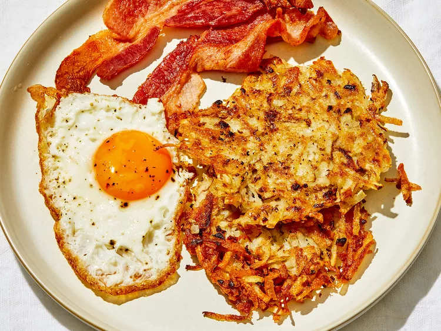

Homemade Crispy Hash Browns

Description
Good, old-fashioned, restaurant-style hash browns.
Perfect with hot pepper sauce and ketchup!
Ingredients
- 2 medium russet potatoes, shredded
- ½ medium onion, finely chopped
- ¼ cup all-purpose flour
- 1 large egg
- 1 cup oil for frying, or as needed
- salt and pepper to taste